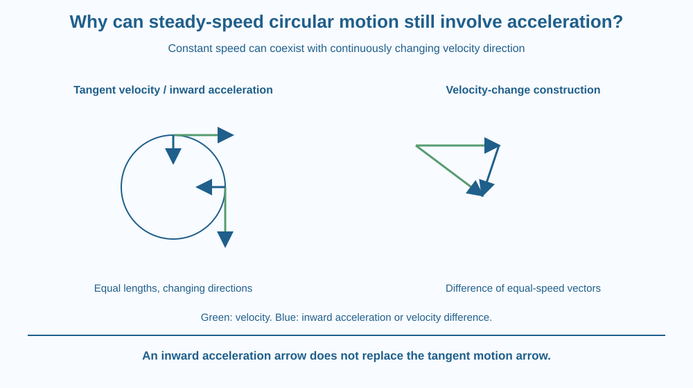

Explain why steady speed around a circle still means changing velocity. Construct a simple velocity-change vector and relate it to inward acceleration. Keep the mathematical description separate from the particular force that produces a real object's circular motion.
A marker moves around a circle at a steady rate. A speedometer could show the same number throughout, yet the marker keeps turning. If acceleration means a change in velocity, does the unchanged speed imply zero acceleration?
Only if direction is ignored. Velocity includes direction as well as magnitude. Around a curved path, that direction changes even when the amount of distance covered per second remains constant.
The useful question is how two velocity arrows at nearby positions differ, not merely whether their lengths match.
Speed is a scalar describing how rapidly path length accumulates. Velocity is a vector, combining magnitude with direction. Equal speeds can therefore correspond to different velocities.
In uniform circular motion, the speed is constant while the path is a circle. At each point, the instantaneous velocity is directed along a tangent to the circle rather than toward its centre.
Consider two nearby positions. Draw equal-length tangent velocity arrows, then move them to a common tail without rotating them. Their tips point in different directions. The vector from the first tip to the second represents the change in velocity.
Acceleration is velocity change divided by elapsed time. As the two positions are chosen closer together in the ideal circular model, the acceleration direction is inward toward the centre. This is called centripetal acceleration.
Inward acceleration does not mean the velocity itself points inward. The two arrows answer different questions: velocity indicates current motion, while acceleration indicates how that velocity changes. Confusing them would send the model directly across the circle instead of around it.
For the same circle, greater speed requires more rapid directional change per time. For the same speed, a tighter circle also requires a larger inward acceleration. A mathematical extension expresses the magnitude as speed squared divided by radius.
A real object needs an interaction that provides the appropriate inward net force. The source can differ between systems. This lesson does not repeat orbital gravity or a general definition of force; its target is why directional change counts as acceleration in the first place.
If the required inward interaction ends, the object does not automatically continue following the drawn circle. Its immediate motion is along the local tangent in the ideal model, before other influences alter it. A circle is a path requiring conditions, not an invisible track imposed by the diagram.
Draw a clock-like circle and place motion markers at the top and right. Give each a tangent velocity arrow of equal length. Their equal lengths represent equal speed, while their different directions represent different velocity.
Copy the arrows to a common tail and connect their tips in the correct order. This construction makes velocity change visible rather than relying on the word turning alone.
Use another colour for the inward acceleration arrows on the circle. Keep them distinct from the tangent arrows. The two-colour model is especially useful because a single unlabelled arrow can otherwise be mistaken for either quantity.
The SVG shows tangent velocity arrows at several positions on a circle and inward acceleration arrows in a separate colour. A vector inset places two nearby velocities at a common tail and marks their difference.
Labels state constant speed but changing direction. The vectors are schematic, not measured motion data. The graphic uses no orbiting Moon or gravity arrows, preserving the distinction from earlier orbital lessons.
A tangent-release inset illustrates what the ideal path would begin to do if the circular constraint were removed. It is a paper model, not an instruction to swing or release objects at home.

A vehicle taking a bend changes direction even if its speed reading is steady. That is a useful example of why a scalar display does not fully describe the motion. Real driving involves additional forces and conditions beyond the ideal circle.
Rotating equipment also contains points undergoing directional change. A point nearer or farther from the axis can have different speed and acceleration relationships, so one machine's rotation rate alone is not every point's linear speed.
No practical circular-motion test is required. Do not swing weights, spin loose objects or experiment near moving vehicles or machinery. A vector drawing isolates the concept safely.
Use paper, a ruler and two colours.
Label every arrow by quantity. The construction should not turn the tangent velocity into a radial motion arrow. If the directions are confusing, compare the top and right positions before adding more points. No physical spinning apparatus is needed.
Why does equal speed not imply equal velocity at two different points around a circle? Use vector magnitude and direction separately.
Now keep speed fixed but reduce the radius. Explain why the path requires faster directional change. This qualitative comparison supports the radius relationship without asking a student to infer real vehicle handling limits or test a tighter turn.
Which quantity includes direction as well as magnitude?
Answer: B — Velocity is a vector, so changing direction changes velocity even at constant speed.
Why is steady-speed circular motion accelerated?
Answer: A — Acceleration responds to velocity change, including a change of direction.
In the ideal model, the circular constraint ends. What is the immediate direction of motion?
Answer: C — The instantaneous velocity is tangent before other interactions alter the subsequent path.
Create a diagram correcting the statement “Constant speed means zero acceleration.” Use two equal-length velocity arrows at nearby positions and a separate velocity-change construction.
Include one caption distinguishing tangent velocity from inward acceleration. Your explanation should remain mathematical and should not repeat the earlier Moon-orbit story or propose releasing a real swinging object to test the drawing.
Acceleration can change where a velocity points without increasing its length. A speedometer can therefore remain steady while the motion is continuously accelerating. The apparent contradiction comes from using one number to stand in for a vector that contains more information.
Uniform circular motion has constant speed but changing velocity direction, so it requires inward acceleration while the instantaneous velocity remains tangent to the path.